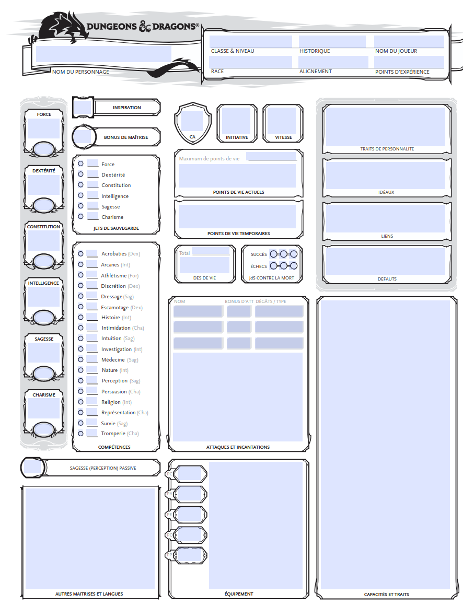
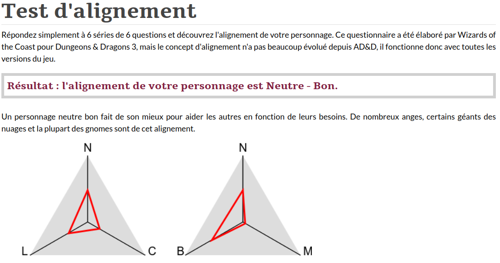

graph LR A[Respect des règles] <--> B[Liberté individuelle]

Avant d’être psychologue, j’étais un enfant et un adolescent intéressé par les jeux de rôles d’heroic-fantasy tels que Donjons & Dragons (D&D). Je lisais et relisais les livres des règles qui servent de bases aux parties. Ironiquement, j’ai passé bien plus de temps à lire les règles qu’à participer à des parties (il faut en avoir l’occasion et la possibilité). Je me suis rendu compte - plus tard - que ces règles constituaient des conceptualisations des comportements humains et des rapports entre les individus et le monde extérieur. Chaque joueur incarne son personnage et le maître du jeu incarne l’environnement et tous les personnages non-joueurs. Une fiche reprend traditionnellement les caractéristiques. La Figure 1 est un exemple de feuille de personnage pour la 5ème édition de Donjons & Dragons.

Notion d’alignement
Depuis 1978, l’auteur des premières règles de Donjons & Dragon, Gygax (1978), propose un système d’alignements, même s’il n’en donnait pas de définition précise:
Après avoir tiré les caractéristiques de votre personnage, choisi sa race et sa classe, il vous faut maintenant choisir son alignement. (Gygax, 1986, p 33)
La 2ème édition de AD&D propose quant à elle une définition explicite :
L’alignement d’un personnage détermine ses attitudes morales et éthiques de base envers les autres, la société, le bien, le mal et les forces de l’univers en général. […] L’alignement est divisé en deux séries d’attitudes : l’ordre et le chaos, le bien et le mal. En combinant les variations de ces deux séries, il est possible de créer neufs alignements distincts. (Cook, 1989, p 47)
Ces neufs alignements peuvent être représentés ainsi :
| Bon | Neutre | Mauvais | |
|---|---|---|---|
| Loyal | Loyal Bon | Loyal Neutre | Loyal Mauvais |
| Neutre | Neutre Bon | Neutre Neutre | Neutre Mauvais |
| Chaotique | Chaotique Bon | Chaotique Neutre | Chaotique Mauvais |
Voici des exemples d’attitudes pour chaque type d’alignement :
- Loyal Bon : Le paladin type. Suit les lois et aide les autres ;
- Chaotique Bon : Rebelle au grand cœur. Aide, mais à sa manière ;
- Neutre Bon : Fait le bien sans préférence pour l’ordre ou le chaos ;
- Loyal Neutre : Suit la loi, peu importe les conséquences morales ;
- Neutre Neutre (aussi appelé “Vrai Neutre”) : Cherche l’équilibre ou agit selon ce qui lui semble approprié ;
- Chaotique Neutre : Fait ce qu’il veut, quand il veut, sans être bon ou mauvais ;
- Loyal Mauvais : Tyran qui utilise la loi pour dominer les autres ;
- Neutre Mauvais : Égocentrique, ne suit que son intérêt ;
- Chaotique Mauvais : Destructeur, sadique, imprévisible.
Je me souviens avoir été intrigué par cette typologie : je la trouvais originale et intéressante sans savoir ce qu’il fallait vraiment en penser. J’ai remarqué que les joueurs à qui j’en parlais avaient la même impression que moi. Cette typologie moralo-éthique a traversé les années et existe encore dans la cinquième version du jeu (Wizards of the Coast, 2017).
Méthode d’évaluation de l’alignement
Le site officiel de D&D propose d’ailleurs un questionnaire qui comporte 36 questions permettant d’estimer l’alignement du joueur qui y répond.
Voici les résultats que j’ai personnellement obtenus aujourd’hui (Figure 2) :

Le triangle de gauche représente mon positionnement éthique : c’est l’alignement neutre qui est prévalent même si j’ai parfois répondu de manière loyale et chaotique. Ce résultat semble me correspondre car je me reconnais un tendance à respecter les règles extérieures mais également à m’opposer à celles que je n’estime pas utiles ou pertinentes. Je considère les règles comme des moyens et non comme des buts en soi.
Le triangle de droite représente mon positionnement moral : c’est l’alignement bon qui est clairement prévalent même si je peux parfois me montrer neutre. Je note l’absence d’aspects mauvais. Ce résultat semble également me correspondre et - par association - me fait penser à la neutralité bienveillante prônée par la psychanalyse (Laplanche & Pontalis, 1971). En l’occurrence, il s’agit d’accepter les êtres humains tels qu’ils existent dans une attitude compréhensive, afin de permettre une écoute thérapeutique.
Mon alignement proposé est dès lors neutre bon.
Il s’agit notamment de l’alignement supposé du personnage de Gandalf décrit par Tolkien (1954) car il aide les peuples libres, indépendamment de leur organisation politique. Cette assimilation à Gandalf me comble d’ailleurs de joie.
Si vous passez le test, vous obtiendrez probablement d’autres résultats que les miens.
Bases philosophiques de la notion d’alignement
Les manuels de Donjons & Dragons ne font pas de références théoriques explicites à des courants philosophiques précis lorsqu’ils évoquent les alignements. Ceux-ci sont toutefois héritiers de la philosophie morale qui est une branche de la philosophie qui est l’étude systématique des principes, des valeurs et des normes qui guident nos actions, nos décisions et nos jugements moraux (Vanin & Gagné, 2022). Il s’agit d’une philosophe qui dispose de plusieurs branches et propose de déterminer en quoi tel ou tel comportement est souhaitable ou on dans une collectivité. Quelles cadres théoriques seraient-ils liés à la notion d’alignement ?
Axe éthique
L’axe éthique de D&D propose une polarité entre le respect des règles collectives et la primauté de la liberté individuelle, que nous pourrions représente ainsi :
Celles-ci sont mises en opposition. Cela signifie que lorsque les individus vivent en groupe, leur liberté individuelle constitue une menace à la stabilité du groupe. Assurer cette stabilité nécessiterait dès lors la diminution (voire la suppression) des libertés de chacun. Ce thème est précisément central dans la théorie du contrat social qui émergea comme philosophie politique au seizième siècle. Le contractualisme est un courant de philosophie politique qui conçoit l’origine de la société et de l’État comme un contrat originaire entre les hommes par lequel ceux-ci acceptent une limitation de leur liberté en échange de lois garantissant la perpétuation du corps social. L’anglais Thomas Hobbes fut le fer de lance de cette doctrine en proposant d’abandonner la liberté individuelle au bénéfice d’un ordre supérieur :
C’est comme si chacun devait dire à chacun : J’autorise cet homme, ou cette assemblée d’hommes, j’abandonne mon droit de me gouverner à cet homme, ou à cette assemblée, à cette condition que tu lui abandonnes ton droit, et autorise toutes ses actions de la même manière. Cela fait, la multitude ainsi unie en une seule personne est appelée une RÉPUBLIQUE, en latin CIVITAS. (Hobbes, 1651)
Autre autres contractualistes anglais, John Locke se démarqua toutefois en imposant au pouvoir mis en place par la collectivité de défendre des droits inaliénable, dont ceux de la liberté individuelle et de la propriété :
Tout cela montre évidemment que bien que la nature ait donné toutes choses en commun, l’homme néanmoins, étant le maître et le propriétaire de sa propre personne, de toutes ses actions, de tout son travail, a toujours en soi le grand fondement de la propriété; et que tout ce en quoi il emploie ses soins et son industrie pour le soutien de son être et pour son plaisir, surtout depuis que tant de belles découvertes ont été faites, et que tant d’arts ont été mis en usage et perfectionnés pour la commodité de la vie, lui appartient entièrement en propre, et n’appartient point aux autres en commun. (Locke, 1660)
Locke attribue à l’État un rôle majeur : celui de garantir les droits naturels des êtres humains. S’il n’y parvient pas, il perd toute légitimité officielle et doit être destitué. Tel est le cas lorsqu’un monarque devient un tyran :
Quiconque, revêtu d’autorité, excède le pouvoir qui lui a été donné par les lois, et emploie la force qui est en sa disposition à faire, à l’égard de ses sujets, des choses que les lois ne permettent point, est, sans doute, un véritable tyran ; et comme il agit alors sans autorité, on peut s’opposer à lui tout de même qu’à tout autre qui envahirait de force le droit d’autrui. (Locke, 1660)
Nous voyons ici poindre une opposition majeure dans la conception du contrat social entre les deux philosophes même si John Locke ne prône pas l’anarchie. Le mouvement anarchique, ou anarchisme, est une doctrine politique et sociale qui vise à abolir toute forme d’autorité contraignante, en particulier l’État, les hiérarchies imposées, et les rapports de domination économique ou sociale.
L’élément important ici est le degré de confiance que l’individu accorde à ses dirigeants et aux règles qu’ils produisent. Les accepte-t-il ? S’y oppose-t-il ? Tente-t-il de s’en extraire ?
De manière schématique, dans les sociétés démocratiques occidentales actuelles, il existe une polarisation récurrente entre les politiques dites :
- libérales : qui défendent principalement les libertés individuelles avec plus ou moins de ferveur ;
- socialistes : qui défendent principalement la notion de groupe social, tentant de stabiliser sa légitimité comme principe supérieur aux intérêts individuels.
L’axe éthique de D&D convoque dès lors cette polarité de type politique.
Axe moral
L’axe moral semble quant à lui propose une autre polarité :
graph LR Egoïsme <--> Altruisme
Faut-il d’abord penser à soi-même ou au bien-être des autres ? D&D étant un jeu d’influence médiévale, il peut paraître pertinent de se replacer à cette période de l’histoire de l’Europe. Le moyen-âge est caractérisée par de nombreux conflits violents. L’église catholique constitua un contre-pied important aux choix politiques des seigneurs au nom d’un discours qui encourage l’amour de son prochain, la tolérance, le pardon, l’humilité, la défense et la protection des plus faibles, l’aide aux plus démunis. Les préceptes chrétiens tournent autour du martyr de Jésus de Nazareth qui aurait accepté de souffrir et de mourir pour racheter les péchés des êtres humains. Cette conception pacifiste et bienveillante contrasta avec le climat guerrier et violent des sociétés antiques et médiévales. Vint également s’y adjoindre une valorisation de la vie après la mort : peu importe les souffrances et les malheurs dans la vie quotidienne puisqu’un bonheur parfait attend le chrétien décédé. Cette croyance permit ainsi de supporter de nombreux désagréments matériels avec stoïcisme, patience et détermination.
La pensée d’influence chrétienne (notons que le coran cite tant le personnage de Jésus que de Marie et présente dès lors certains héritages chrétiens) reste particulièrement vive dans le monde actuel et prône le dépassement des intérêts individuels au profit des autres. L’altruisme est dès lors vivement encouragé dans les préceptes religieux contemporains.
Il est dès lors probable que l’axe moral de D&D repose principalement sur cette assise philosophique qui traverse les religions.
Précisons qu’il ne faut pas être croyant pour être altruiste. En effet, la notion de civilisation se nourrit de démarches altruistes dans un contexte de coopération entre les individus d’une même collectivité.
Conclusion
La notion d’alignement dans D&D nous permet de réfléchir à la relation qu’un individu (ou un personnage créé) entretient avec un modèle de société donné. Les valeurs de l’un peut être en congruence avec celles de l’autre. Cette congruence fonde la loyauté. Dans le cas contraire, le chaos est la démarche de rébellion et de subversion qui vise à modifier l’ordre établi. Cette quête peut être sous-tendue par des intérêts égoïstes ou altruistes. Il s’agit évidemment de considérations qui simplifient la complexité des comportements humains. L’alignement offre un cadre général tout en laissant une place aux surprises et aux innovations.
Les références
Cook, D. (1989). Advanced Dungeons & Dragons : Manuel Complet du Joueur (M. Pagel, Trad.). Paris, France: Hexagonal / TSR.
Gygax, G. (1978). Advanced Dungeons & Dragons: Player’s Handbook. Lake Geneva, Wisconsin: TSR, Inc.
Gygax, G. (1986). Manuel des Joueurs (R. Guesler, P. Régis, & A. Stubbe, Trad.). Paris, France: Descartes Éditeur.
Hobbes, T. (1651). Léviathan. Traité de la matière, de la forme et du pouvoir d’une république ecclésiastique et civile. Consulté à l'adresse http://classiques.uqac.ca/classiques/hobbes_thomas/leviathan/leviathan.html
Laplanche, J., & Pontalis, J.-B. (1971). Vocabulaire de la psychanalyse. Paris, France: PUF.
Locke, J. (1660). Two Treatises of Government.
Tolkien, J. R. R. (1954). Le Seigneur des Anneaux. Londres, Royaume-Uni: Allen & Unwin.
Vanin, L., & Gagné, J.-B. (2022). Introduction à l’éthique : fondements et grands courants. Paris, France: Ellipses.
Wizards of the Coast. (2017). Manuel des Joueurs (A. Nikolavitch, F. Weil, & F. Marcela-Froideval, Trad.). Lyon, France: Black Book Éditions.
Citation
BibTeX
@online{thiry2025,
author = {Thiry, Benjamin},
title = {Notion d’alignement dans Donjons et Dragons repères moraux et
éthiques},
date = {2025-05-04},
url = {https://benjaminthiry.netlify.app/posts/2025-05-03-ddalignement/},
langid = {fr}
}
Veuillez citer ce travail comme suit :
Thiry, B. (2025, May 4). Notion d’alignement dans Donjons et Dragons
repères moraux et éthiques. Retrieved from https://benjaminthiry.netlify.app/posts/2025-05-03-ddalignement/